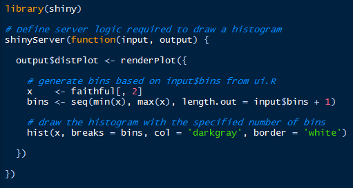

Introducción a la Ciencia de Datos
Sesión 4 - Parte II - Comunicación/Publicación de resultados
Ismael Gómez Schmidt @ismaelgomezs
Data Scientist
Contenido de Sesión 4 - Parte II

R Markdown, librería
knitry R notebooksShiny
Google Data Studio
Otras herramientas
R Markdown

Librería que permite crear y dar formato a documentos de texto como HTML, PDF, Word, etc.
No es necesario instalarla (viene con R Studio), pero sí se requiere la librería
knitrpara compilar.Es parte del proceso que incluye la comunicación de resultados, el trabajo colaborativo, la reproducibilidad y "hacer ciencia de datos" con los notebooks.
Con esto es posible incluir texto, código, imágenes, gráficos, etc.
El archivo base tiene extensión
.Rmd(todos los slides del taller están hechos con R markdown)
Pasos básicos
1) Crear nuevo archivo "R Markdown..." con extensión .Rmd para HTML y guardarlo
2) Instalar y cargar la librería
knitr3) Presionar botón "Knit"
Sugerencias a revisar
La sintaxis, configuración y detalles principales se encuentran en este Cheat Sheet
Para exportar a PDF instalar MikTEX (en Windows)
Librerías
slidifyyrevealjspara creación de slides o presentacionesLa diferencia con R Notebook es que este permite ejecutar código "in situ" y previsualizar resultados (no es ncesario "knitear" el documento completo)
Shiny

Librería que permite levantar aplicaciones interactivas desde R Studio, ya sea de manera local como en servidor remoto.
Busca reducir la dificultad de programación. No es necesario tener habilidades de desarrollo web.
Apunta a la comunicación de resultados y a la experiencia del usuario final, por lo tanto contempla aspectos técnicos (archivo o parte
server.R), de usabilidad y estética (archivo o parteui.R).
ui y server


Pasos básicos
1) Es necesario instalar y cargar la librería
shiny.2) Crear nuevo(s) archivo(s) "Shiny Web App..." con la opción "Multiple File", dándole nombre a la app y en una nueva carpeta dentro del work directory (wd)
3) Abrir cualquiera de los dos archivos (server o ui) y presionar "Run App"
Sugerencias a revisar
Para publicar en servidor remoto de manera gratuita (con limitaciones), crear una cuenta en shinyapps.io y usar la librería
devtoolspara deploy.Para usar templates tipo dashboards
Google Data Studio
Google Data Studio
Herramienta de Google que permite crear y compartir dashboards personalizados.
Solo basta crear una cuenta con un correo electrónico asociado
Es gratuito
Permite conectar datos de Analytics, Adwords, Youtube, Facebook, Search Console, entre otros.
Además permite importar bases de datos (MySQL, PostgreSQL), archivos CSV, etc.
Otras herramientas
Librería
blogdown(creación de sitios web estáticos desde R Studio)Github (control de versiones, trabajo colaborativo, repositorio, reproducibilidad, open data, etc.)
Power BI
Tableau
Twitter!